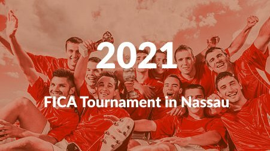
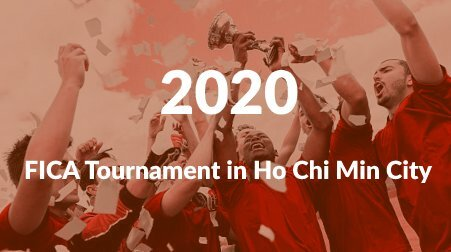

The FICA Soccer Tournament , held every year, is a place where young amateur soccer players can meet with others from all over the world, to have an event full of camaraderie and outdoor physical activity, with support for all genders, ethnicities and cultural reality.
In particular, this year's FICA Tournament is waiting for the participation of various teams who want to spread the value of sharing, free culture, and outdoor activities. Amateur soccer supporters, Sports lovers, their families and friends, etc, are all invited to the 5-day event. Various people active in the field of soccer will gather in one place to share richer and more dynamical experiencies. We hope that it will be an opportunity to share our thoughts on creating an ecosystem.
September 14 - 18, 2022 (Wednesday - Sunday)
See you at the FICA Soccer Tournament!
Do you have any other questions about FICA Soccer Tournament 2022?
acolombo1@yahoo.com
FICA Global 2022 Logo Contest
The winner of the logo contest, which was held from June 8th to July 7th, was decided through online voting and evaluation by the judges. After consultation with the winning designer, the logo of FICA Tournament 2022, which was optimized for use on the website and promotional materials, is as follows.
Aldo Colombo of Argentina, who designed the winning piece, explains the meaning of the logo as follows:
"
The tri-colored ball symbolizes the integration of different cultures and ethnicities, united in a sigle world of football. The mimalist design symbolizes purity, harmony, wholeness and infinity.
"
View past FICA Tournaments
Take a look at the recent FICA Tournaments held in Ho Chi Min City, Vietnam and Nassau, The Bahamas.

